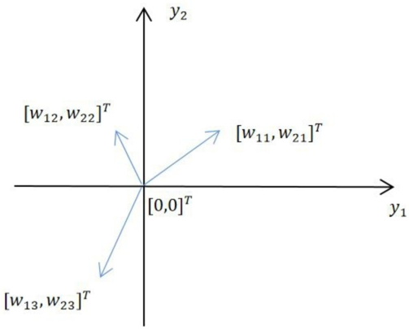
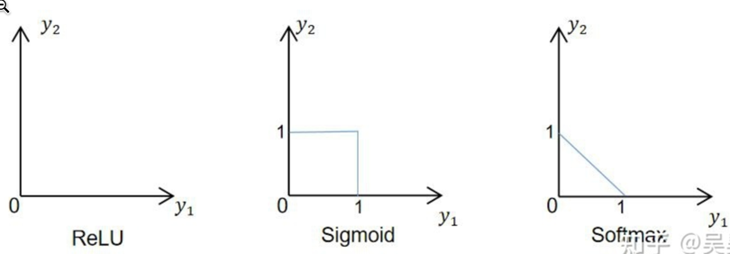
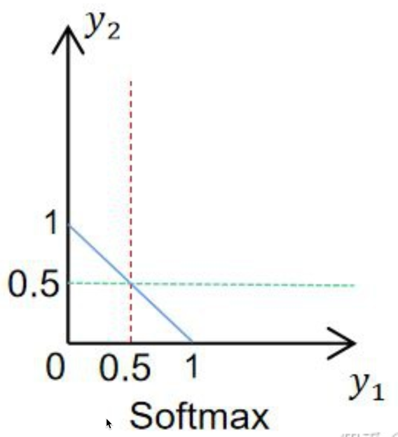
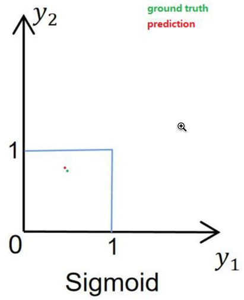

深度學習計畫數位教材製作
1. 教材架構

Figure 1: 高中深度學習數位教材
2. 工作分配
2.1. 涂益郎、宋承彥
深度學習簡介、類神經網路、卷積類神經網路、卷積層、卷積核、缺值處理
2.2. 顏永進、許柏浤
激活函數、池化層、全連接層、實作1、實作2

2.4. 問題
- 每支影片4個問題，這些問題是要嵌入影片中問還是看完一次問，是要像WSQ學習單那一類的問題？還是要用來評估學生能力的？
- 腳本的來源是否要based on“和AI做朋友”？或是自行編製？
- 最後是交word/pdf還是ppt?
3. 激活函數腳本
3.1. 前言
3.2. 什麼是函數
3.3. 為什麼需要激活函數
3.4. 什麼是激活函數
3.5. Article to read
- why
There is one nice attribute of Softmax as compared with standard normalisation.
It react to low stimulation (think blurry image) of your neural net with rather uniform distribution and to high stimulation (ie. large numbers, think crisp image) with probabilities close to 0 and 1.
While standard normalisation does not care as long as the proportion are the same.
Have a look what happens when soft max has 10 times larger input, ie your neural net got a crisp image and a lot of neurones got activated
>>> softmax([1,2]) # blurry image of a ferret
[0.26894142, 0.73105858]) # it is a cat perhaps !?
>>> softmax([10,20]) # crisp image of a cat
[0.0000453978687, 0.999954602]) # it is definitely a CAT !
And then compare it with standard normalisation
>>> std_norm([1,2]) # blurry image of a ferret
[0.3333333333333333, 0.6666666666666666] # it is a cat perhaps !?
>>> std_norm([10,20]) # crisp image of a cat
[0.3333333333333333, 0.6666666666666666] # it is a cat perhaps !?
4. 池化層
4.1. Gray mage to unsigned int matrix
1: from PIL import Image 2: import numpy as np 3: import skimage.measure 4: 5: im = np.array(Image.open('images/32eye.png').convert('L')) 6: #print(im[0]) 7: 8: poim = skimage.measure.block_reduce(im, (2, 2), np.max) 9: img = Image.fromarray(poim, 'L') 10: img.show()
>>> >>> >>> >>> >>> >>> >>> >>> >>> >>> >>>
4.2. table
| 169 | 177 | 185 | 188 | 189 | 177 | 159 | 140 | 125 | 117 | 93 | 82 | 85 | 79 | 71 | 68 |
| 212 | 217 | 216 | 207 | 195 | 183 | 168 | 152 | 141 | 127 | 112 | 99 | 87 | 77 | 74 | 72 |
| 225 | 227 | 221 | 212 | 205 | 187 | 172 | 157 | 141 | 125 | 110 | 98 | 84 | 73 | 73 | 71 |
| 232 | 232 | 226 | 220 | 209 | 192 | 175 | 154 | 137 | 115 | 101 | 88 | 75 | 67 | 64 | 62 |
| 234 | 233 | 216 | 203 | 192 | 161 | 129 | 99 | 79 | 59 | 48 | 45 | 49 | 56 | 60 | 60 |
| 222 | 210 | 199 | 158 | 152 | 116 | 81 | 59 | 46 | 38 | 38 | 24 | 11 | 17 | 37 | 62 |
| 190 | 161 | 126 | 76 | 47 | 35 | 34 | 29 | 27 | 30 | 37 | 34 | 33 | 23 | 13 | 29 |
| 193 | 94 | 70 | 161 | 114 | 65 | 88 | 51 | 29 | 51 | 79 | 53 | 36 | 44 | 37 | 20 |
| 85 | 101 | 200 | 250 | 123 | 173 | 199 | 33 | 0 | 47 | 91 | 69 | 39 | 36 | 59 | 53 |
| 151 | 171 | 187 | 245 | 169 | 99 | 161 | 104 | 63 | 90 | 123 | 68 | 40 | 28 | 38 | 83 |
| 211 | 193 | 176 | 202 | 231 | 101 | 86 | 136 | 116 | 126 | 97 | 43 | 31 | 16 | 34 | 86 |
| 225 | 218 | 209 | 190 | 191 | 171 | 85 | 64 | 63 | 71 | 70 | 69 | 50 | 41 | 48 | 65 |
| 232 | 231 | 226 | 209 | 187 | 166 | 147 | 128 | 110 | 103 | 93 | 85 | 77 | 83 | 87 | 85 |
| 236 | 233 | 227 | 227 | 209 | 203 | 190 | 167 | 146 | 127 | 102 | 94 | 91 | 95 | 95 | 97 |
| 237 | 235 | 232 | 225 | 228 | 226 | 210 | 188 | 166 | 143 | 116 | 107 | 101 | 96 | 93 | 95 |
| 238 | 236 | 233 | 230 | 223 | 216 | 201 | 186 | 168 | 154 | 138 | 126 | 109 | 99 | 95 | 104 |
5. 全連接層
5.1. 參考影片
5.2. 參考網頁
5.3. 全連接層
- 說法0
在實際使用中，全連接層可由卷積操作實現：對前層是全連接的全連接層可以轉換為卷積核為1*1的卷積；而前層是卷積層的全連接層可以轉換為卷積核為前層卷積輸出結果的高和寬一樣大小的全局卷積。
- 說法1
https://blog.csdn.net/qq_39521554/article/details/81385159
全連接層（fully connected layers，FC）在整個卷積神經網絡中起到「分類器」的作用。如果說卷積層、池化層和激活函數層等操作是將原始數據映射到隱層特徵空間的話，全連接層則起到將學到的「分佈式特徵表示」映射到樣本標記空間的作用。在實際使用中，全連接層可由卷積操作實現：
對前層是全連接的全連接層可以轉化為卷積核為1x1的卷積；而前層是卷積層的全連接層可以轉化為卷積核為hxw的全局卷積，h和w分別為前層卷積結果的高和寬。
- 全連接的核心操作就是矩陣向量乘積 y = Wx。本質就是由一個特徵空間線性變換到另一個特徵空間。目標空間的任一維——也就是隱層的一個 cell——都認為會受到源空間的每一維的影響。不考慮嚴謹，可以說，目標向量是源向量的加權和。
- 在 CNN 中，全連接常出現在最後幾層，用於對前面設計的特徵做加權和。比如 mnist，前面的卷積和池化相當於做特徵工程，後面的全連接相當於做特徵加權。（卷積相當於全連接的有意弱化，按照局部視野的啟發，把局部之外的弱影響直接抹為零影響；還做了一點強制，不同的局部所使用的參數居然一致。弱化使參數變少，節省計算量，又專攻局部不貪多求全；強制進一步減少參數。少即是多） 在 RNN 中，全連接用來把 embedding 空間拉到隱層空間，把隱層空間轉回 label 空間等。
- CNN與全連接
在CNN結構中，經多個卷積層和池化層後，連接著1個或1個以上的全連接層．與MLP類似，全連接層中的每個神經元與其前一層的所有神經元進行全連接．全連接層可以整合卷積層或者池化層中具有類別區分性的局部信息．為了提升 CNN網絡性能，全連接層每個神經元的激勵函數一般採用ReLU函數。
最後一層全連接層的輸出值被傳遞給一個輸出，可以採用softmax邏輯回歸（softmax regression）進行 分 類，該層也可 稱為 softmax層（softmax layer）．對於一個具體的分類任務，選擇一個合適的損失函數是十分重要的，CNN幾種常用的損失函數並分析了它們各自的特點．通 常，CNN的全連接層與MLP 結構一樣，CNN的訓練算法也多採用BP算法
舉個例子：
最後的兩列小圓球就是兩個全連接層，在最後一層卷積結束後，進行了最後一次池化，輸出了20個12*12的圖像，然後通過了一個全連接層變成了1*100的向量。
這是怎麼做到的呢，其實就是有20*100個12*12的卷積核卷積出來的，對於輸入的每一張圖，用了一個和圖像一樣大小的核卷積，這樣整幅圖就變成了一個數了，如果厚度是20就是那20個核卷積完了之後相加求和。這樣就能把一張圖高度濃縮成一個數了。全連接的目的是什麼呢？
因為傳統的網絡我們的輸出都是分類，也就是幾個類別的概率甚至就是一個數–類別號，那麼全連接層就是高度提純的特徵了，方便交給最後的分類器或者回歸。但是全連接的參數實在是太多了，你想這張圖裡就有20*12*12*100個參數，前面隨便一層卷積，假設卷積核是7*7的，厚度是64，那也才7*7*64，所以現在的趨勢是儘量避免全連接，目前主流的一個方法是全局平均值。
也就是最後那一層的feature map（最後一層卷積的輸出結果），直接求平均值。有多少種分類就訓練多少層，這十個數字就是對應的概率或者叫置信度。
- 說法2
https://www.zhihu.com/question/41037974/answer/150552142
全連接層到底什麼用？我來談三點。
- 全連接層（fully connected layers，FC）在整個卷積神經網絡中起到「分類器」的作用。如果說卷積層、池化層和激活函數層等操作是將原始數據映射到隱層特徵空間的話，全連接層則起到將學到的「分佈式特徵表示」映射到樣本標記空間的作用。在實際使用中，全連接層可由卷積操作實現：對前層是全連接的全連接層可以轉化為卷積核為1x1的卷積；而前層是卷積層的全連接層可以轉化為卷積核為hxw的全局卷積，h和w分別為前層卷積結果的高和寬（注1）。
- 目前由於全連接層參數冗餘（僅全連接層參數就可佔整個網絡參數80%左右），近期一些性能優異的網絡模型如ResNet和GoogLeNet等均用全局平均池化（global average pooling，GAP）取代FC來融合學到的深度特徵，最後仍用softmax等損失函數作為網絡目標函數來指導學習過程。需要指出的是，用GAP替代FC的網絡通常有較好的預測性能。具體案例可參見我們在ECCV’16（視頻）表象性格分析競賽中獲得冠軍的做法：「冠軍之道」Apparent Personality Analysis競賽經驗分享 - 知乎專欄 ，project：Deep Bimodal Regression for Apparent Personality Analysis
在FC越來越不被看好的當下，我們近期的研究（In Defense of Fully Connected Layers in Visual Representation Transfer）發現，FC可在模型表示能力遷移過程中充當「防火牆」的作用。具體來講，假設在ImageNet上預訓練得到的模型為 ，則ImageNet可視為源域（遷移學習中的source domain）。微調（fine tuning）是深度學習領域最常用的遷移學習技術。針對微調，若目標域（target domain）中的圖像與源域中圖像差異巨大（如相比ImageNet，目標域圖像不是物體為中心的圖像，而是風景照，見下圖），不含FC的網絡微調後的結果要差於含FC的網絡。因此FC可視作模型表示能力的「防火牆」，特別是在源域與目標域差異較大的情況下，FC可保持較大的模型capacity從而保證模型表示能力的遷移。（冗餘的參數並不一無是處。）
Figure 4: Caption
- 注1: 有關卷積操作「實現」全連接層，有必要多囉嗦幾句。以VGG-16為例，對224x224x3的輸入，最後一層卷積可得輸出為7x7x512，如後層是一層含4096個神經元的FC，則可用卷積核為7x7x512x4096的全局卷積來實現這一全連接運算過程，其中該卷積核參數如下：
「filter size = 7, padding = 0, stride = 1, D_in = 512, D_out = 4096」
經過此卷積操作後可得輸出為1x1x4096。
如需再次疊加一個2048的FC，則可設定參數為「filter size = 1, padding = 0, stride = 1, D_in = 4096, D_out = 2048」的卷積層操作。
- 全連接層（fully connected layers，FC）在整個卷積神經網絡中起到「分類器」的作用。如果說卷積層、池化層和激活函數層等操作是將原始數據映射到隱層特徵空間的話，全連接層則起到將學到的「分佈式特徵表示」映射到樣本標記空間的作用。在實際使用中，全連接層可由卷積操作實現：對前層是全連接的全連接層可以轉化為卷積核為1x1的卷積；而前層是卷積層的全連接層可以轉化為卷積核為hxw的全局卷積，h和w分別為前層卷積結果的高和寬（注1）。
- 說法3
https://www.zhihu.com/question/41037974/answer/150552142
大致看了一眼問題下的回答，排名靠前的大佬們大多都是從具體的網絡結構出發（比如說各種CNN或者RNN）去定性地回答全連接層的作用。
那我就在這裡稍稍補充一下個人的一些觀點，在拋開各種網絡結構，從純數學的角度來討論全連接層的作用是什麼，以及如何理解全連接層。
首先，不管是什麼造型的神經網絡，只要它最後一層是全連接層，那這個全連接層必然只會承擔以下兩個任務當中的一個：
- 分類問題(Classification)
- 回歸問題(Regression)
So，咱們就從這兩個角度出發，從數學的角度去看全連接層的作用!
其次，為了方便起見，咱們只考慮不包含隱藏層的全連接層，這種情況下的全連接層實際上是一個凸函數，有且僅有一個全局最優解。
- 全連接層的幾何意義
為了方便後面的討論，咱們先來看一下全連接層的幾何意義。
我們現在假設全連接層得到輸入是一個3維的向量，任務是一個二分類的任務（也就是說輸出有兩個節點），那麼這個全連接層的數學表達式就像下面這個樣子：
\[y=f(Wx+b)\]
其中：$y$是全連接層輸出，是一個長度為2的向量，我們記 \(y=[y_1,y_2]^T\) ；
\(f\) 是激活函數，例如ReLU，Sigmoid以及Softmax等;
是全連接層的權重矩陣，我們記 w=\[\begin{bmatrix} w_{11} & w_{12} & w_{13} \\ w_{21} & w_{22} & w_{23} \end{bmatrix} \]
\(x\) 是全連接層輸入，我們記 \(y=|x_1, x_2, x_3|^T\)
\(b\) 是bias，為了方便討論我們暫時另其等於0。
為了方便理解，咱們先回顧一下在線性代數當中矩陣和向量相乘的幾何意義。
我們知道，矩陣與向量相乘所得到的結果，必然位於矩陣的列空間(column space)當中。
那什麼是列空間？
就是由矩陣的列向量所組成的一個包含坐標原點的空間，在我們的這個例子裡邊兒，權重矩陣的列空間如下圖所示：

Figure 5: 權重矩陣的column space
而 \(w_x\) 會產生的所有結果必然位於矩陣 \(W\) 的列向量的所有線性組合所組成的subspace內，也就是：
\[W_x= x_1\begin{bmatrix} w_{11} \\w_{21} \end{bmatrix} + x_2 \begin{bmatrix} w_{12} \\ w_{22} \end{bmatrix} + x_3 \begin{bmatrix} w_{13} \\w_{23} \end{bmatrix} \]
這裡需要提一句，由於我們這裡是拿一個二分類問題來舉例，因此 \(y\in{R^2}\)（二維平面）。
圖5中所給出的例子實際上是默認權重矩陣 \(W\) 的秩為2（也就是說三個列向量不共線，線性無關），對於二分類問題來說，其目標域（也就是ground truth所在的域）必然包含於 \(R^2\) 空間當中。
也就是說這個全連接層理論上來講擬合目標域的分佈是足夠的。
但是如果權重矩陣的秩為1，也就是說三個列向量在一條直線上的話（線性相關），那列向量的所有線性組合也必然位於這條直線上。
這種情況下這個全連接層大概率會出現欠擬合的情況，因為權重矩陣的column space不足以描述目標域當中的所有值。
而當我們對 \(W_X\) 的輸出套上一個激活函數之後，由於激活函數值域的影響，神經網絡的輸出被映射到了一個新的空間當中。
這個新的空間通常是神經網絡的column space的子集，如下圖所示：

Figure 6: 從左往右依次為ReLU、Sigmoid以及Softmax時全連接層的輸出
上圖裡面，當全連接層選用ReLU函數時，全連接層的值域為整個權重矩陣Column Space的第一象限。
而選用Sigmoid函數時，全連接層的值域位於這個1x1的正方形內。
當使用Softmax時，全連接層的值域位於連接[0, 1]以及[1, 0]兩點的線段上，這三個區域都明顯包含於權重矩陣的Column Space當中。
- 全連接層在分類時的作用
對於分類問題，全連接層的輸出通常選用Softmax函數作為輸出，也就是圖6的最右側的這張圖。
而在分類任務時，我們通常是設定一個閾值（threshold），只要全連接層的某個輸出節點的輸出值大於該閾值，我們則認為目前的樣本屬於該輸出節點對應的類。
而這個取閾值的操作對應到圖中的話則如下圖所示，這裡我們設閾值 \(T=0.5\) ：

Figure 7: thresholding操作
也就是說，只要全連接層的輸出位於紅色虛線的右側，我們則認為當前數據屬於 \(y_1\) 所對應的類；若輸出處於綠色虛線的上方，我們則認為當前數據屬於 \(y_2\) 所對應的類。
- 全連接層在回歸當中的作用
我們以Sigmoid函數為例，此時回歸問題的目標域必然位於圖2當中那個1x1的正方形區域內，則全連接層的輸出如下所示：

Figure 8: Regression問題
其中綠色的點代表一個ground truth label，而紅色的點代表全連接層的輸出，若全連接層的輸出與ground truth足夠接近，則認為該網絡有充分的擬合。
- 總結
上面的幾個點就是關於「全連接層的作用」這個問題在數學層面的討論，其實總結起來也就一句話：
全連接層說白了就是在數據的目標域的空間當中挑選出的幾個向量作為列向量，然後由這幾個列向量組成了全連接層的權重矩陣。
這個矩陣的作用就是把輸入的數據從它原來所處的空間投影到權重矩陣的列空間（column space）當中。
而這個列空間剛好就是數據目標域所處的空間；之後再通過激活函數使得全連接層的值域與目標域有一個更好的擬合。
而全連接層的訓練過程其實就是對權重矩陣的列空間的搜索過程，只有當列空間儘可能多地涵蓋數據的目標域所處的空間，全連接層的訓練過程理論上來說才能收斂。
其實從這個角度來看的話，和神經網絡相關的很多問題就比較好理解了，比如說神經網絡訓練的過程當中欠擬合的原因？（Column Space的維度丟失肯定是原因之一）
為什麼低維度數據難做高維度預測？（這種情況下權重矩陣的Column Space實際上只是目標域的一個Subspace，很難將目標域覆蓋完全，這個其實從信息論的角度也可以做出解釋，但是從線性代數上來看的話這種解釋也沒毛病）。
- 參考：
- 「Introduction to Linear Algebra Fifth Edition – Gilbert Strange」
- 「Deep Learning – Ian Goodfellow」
- 「Introduction to Linear Algebra Fifth Edition – Gilbert Strange」
- 分類問題(Classification)
6. 實作1
6.1. 參考影片
What is the difference between these two modes?
7. 實作2
8. TODO 題目 [5/15]
[X]人工智慧的歷史 / A-3-1-S03
- 圖靈測試的目的為:
- 在人工智慧發展的第一階段(1974-1978)，科學家已能利用感知器完成英文字母的辨識，然而人工智慧的發展卻到此停頓，直到1993年CNN之父LeCun提出LeNet模型後，人工智慧才被廣泛應用到支票判讀上。以下何者非造成這種停頓的原因：
- 經費短缺
- 社會大眾對人工智慧缺乏信心
- 當時電腦效能有限
- 不具實際應用價值
- 經費短缺
- 1980年崛起的專家系統曾在人工智慧發展上被寄予厚望，事實上，如今在許多醫用的輔助醫療系統上仍能看到專家系統的影子，然而後來卻未見其更廣泛的發展與應用。造成專家系統發展停滯的原因為：
- 開發與維護成本過高
- 只適用於特定範圍的知識領域
- 商業價值過低
- 以上皆是
- 開發與維護成本過高
- 專家系統主要精神是….以下哪一領域不適合開發專家系統?
- 醫
- 化學
- 商業
- 醫
- 圖靈測試的目的為:
[X]人工智慧的類型 / A-3-1-S04
- 這學期的 AI 選修專題，小帆想開發一個能和電腦玩「剪刀、石頭、布」 的遊戲，她拍了很多不同手勢的照片，並為每張照片加上「剪刀、石頭、 布」的標籤，將這些照片和標籤丟進模型去訓練。請問小帆開發的這套軟體屬於哪一種類型的機器學習?
- 監督式學習
- 非監督式學習
- 半監督式學習
- 強化學習
- 監督式學習
- 小哲初到任職銀行報到，手上的第一個任務是將貸款客戶分為VIP、優良、危險三個等級，銀行資料庫中可用的客戶資料包括客戶貸款金額、每月還款狀況、工作性質、每月薪資….等等。小哲先建立了一個AI模型，將客戶以這些資料為基礎分為三群，然後再觀察這三群裡的客戶資料狀況，最後將其命名為VIP、優良、危險，完成任務。請問小哲所開發的這個AI模型最有可能屬於以下哪一種機器學習類型?
- 監督式學習
- 非監督式學習
- 半監督式學習
- 強化學習。
- 監督式學習
- 咖啡測試 - 強人工智慧 / AI發展的目標
- 圖靈測試
- 強人工智慧、弱人工智慧、通用型人工智慧
- 這學期的 AI 選修專題，小帆想開發一個能和電腦玩「剪刀、石頭、布」 的遊戲，她拍了很多不同手勢的照片，並為每張照片加上「剪刀、石頭、 布」的標籤，將這些照片和標籤丟進模型去訓練。請問小帆開發的這套軟體屬於哪一種類型的機器學習?
[X]資料整理與儲存 / A-3-2-S02
- 人工智慧的重要基礎之一在於龐大的分析資料，然而這些資料往往都先經過重新整理之後才能被有效的分析，主要原因不包括：
- 資料可能有所缺漏
- 資料數值可能出現異常
- 資料數量過於龐大
- 資料所使用的單位不同
- 資料可能有所缺漏
下表為2022年11月16日台中地區的空氣品質即時監測結果，因不明原因，某些時段的監測結果未能被記錄下來，若依據插值法進行資料整理，請問表中的A、B、C三格中應補入何值？
PM2.5(小時濃度值)
監測時間時間 5時 7時 9時 11時 13時 15時 17時 19時 臺中文山 19 X1 17 21 20 14 15 17 臺中后里 17 14 12 13 10 26 20 31 臺中大甲 9 15 9 12 X2 14 12 12 臺中鳥日 17 16 22 32 30 26 21 18 - X1: 19, X2: 12
- X1: 17, X2: 14
- X1: 15, X2: 20
- X1: 18, X2: 13
- X1: 19, X2: 12
- 儲存
- …
- 人工智慧的重要基礎之一在於龐大的分析資料，然而這些資料往往都先經過重新整理之後才能被有效的分析，主要原因不包括：
[X]最短距離分類器原理 / A-3-4-S03
- 最短距離分類器是屬於以下哪一種類型的人工智慧？
- 監督式學習
- 非監督式學習
- 強化學習
- 深度學習
- 監督式學習
- 影片中，小明與小美因AI機器人的調解而合好，然而同樣的爭執因為「功夫戀人2」再度上演，此時AI機器人又故技重施計算最短距離，經過計算，AI機器人悲劇的發現：這部電影到「愛情片」與「動作片」中心點的歐幾里德距離都是13.87。請問此時冷汗直流的AI機器人應如何處置?

- 判定此電影為動作片
- 判定此電影為愛情片
- 丟硬幣決定此電影的類型
- 假裝當機
- 判定此電影為動作片
- 最短距離分類器是屬於以下哪一種類型的人工智慧？
[X]最短距離分類器運作 / A-3-4-S04
影片中的咖啡王子順利升職為專業經理人後，轉換到銀行信用卡部門。這次他負責核發客戶的信用卡額度，銀行擁有的客戶資料包括：
- 生日
- 職業類別
- 薪資
- 性別
咖啡王子想起進行最短距離分類前要先對資料進行標準化，請問以下哪一項客戶資料應該進行標準化：
- 生日
- 職業類別
- 薪資
- 性別
- 生日
由於在信用卡部門表現優異，咖啡王子又高升到貨款部門，這次他想先對客戶申請的貨款金額進行Min-Max標準化。目前手上客戶資料如下：
姓名 貸款金額 Min-Max標準化 張三 900000 2.000 李四 300000 0.100 王五 400000 0.250 趙六 500000 0.333 請問上表中哪一個人的標準化分數是正確的?
- 張三
- 李四
- 王五
- 趙六
- 張三
1: l = [900000, 300000, 400000, 500000, ] 2: for d in l: 3: print( (d - min(l) ) / (max(l)-min(l)))
1.0 0.0 0.16666666666666666 0.3333333333333333
[ ]KNN分類器原理 / A-3-4-S05
- KNN分類器的概念為「找出最接近自己的K個隣居，然後西瓜偎大邊，走到人最多的那一群裡」，下圖中，當K分別為1, 4, 9時，新的資料點分別會被歸為哪一類？
- A、B、A
- A、A、B
- B、B、A
- B、A、A
- A、B、A
- 由上題中可以發現K的值會決定新進資料的分類結果，然而有可能會遇到「最接近的K個隣居裡，不同類別個數一樣」的問題，請問該如何處理較為合理？
- 換一個K值
- 由程式隨機指定新進資料的分類
- 隨機刪除某一個隣居
- 以上皆非
- 換一個K值
- KNN分類器的概念為「找出最接近自己的K個隣居，然後西瓜偎大邊，走到人最多的那一群裡」，下圖中，當K分別為1, 4, 9時，新的資料點分別會被歸為哪一類？
[ ]KNN分類器原理運作 / A-3-4-S06
- …
- …
- …
[ ]樹狀結構 / A-3-4-S07
- 圖示之樹狀結構有 個節點（Node）和 個分支（Branch）。
- …
- 圖示之樹狀結構有 個節點（Node）和 個分支（Branch）。
[ ]決策樹的運作機制 / A-3-4-S08
- …
- …
- …
[ ]熵的意義與運作機制2 / A-3-4-S10
- …
- …
- …
[ ]決策樹的建構1 / A-3-4-S12
- …
- …
[ ]決策樹的建構3 / A-3-4-S14
- …
- …
- …
[ ]單一連結2 / A-3-5-S09
- …
- …
- …
[ ]完整連結2 / A-3-5-S11
- 消費單價中等與消費次數最高是屬哪種族群？
- …
- 消費單價中等與消費次數最高是屬哪種族群？
[ ]群數選擇 / A-3-5-S15
- 關於群數選擇的指標，下列何者正確？
- …
- 關於群數選擇的指標，下列何者正確？
9. 線上會議討論
9.1. 12/09
影片的目的為何?